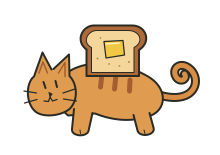

✳ A FIELD GUIDE TO THOUGHT THAT WON’T LAND
Toast.
Cat.
Gravity.
Two rules. One impossible landing.
A rather good place to start thinking.
A book by Matthew Chenoweth Wright
with Millie Sievert & MillieComplex
Butter-side down?

THE CATFeet first?∞
A METAPHOR IN MOTION.
01 / AN ORDINARY KITCHEN. AN EXTRAORDINARY QUESTION.
What happens when a thought
refuses to land?
Start with the old joke: toast falls butter-side down; a cat lands on its feet. Bind the two “always” rules together, and imagination invents a hovering, spinning compromise. The manuscript takes that image into philosophy, recursion, and the nature of thought.
02 / THE PARADOX PLAYGROUND
Let’s see what
we’re assuming.
Switch between the book’s imagined hover and an ideal free-fall model. The rules of the animation are always visible.
CHOOSE THE RULES
The book’s image, made visible: descent slows toward a prescribed hover height while rotation continues.
Hover is prescribed at 0.1016 m (4 in). It is an animation rule, not an outcome derived from gravity or an EFMW proof.
A virtual thought experiment. Use the illustration, never a real animal.
The equations behind this experiment +
Free fall: h(t) = max(0, h₀ − ½gt²), with g = 9.81 m/s² and zero initial vertical velocity. The point-mass model stops when its marker reaches the ground. Air resistance, body shape, and a cat’s righting reflex are not modeled.
Fictional hover: h(t) = h★ + (h₀ − h★)e−2.5t, with h★ = 0.1016 m; angle = 360st degrees. The slowing descent requires an external upward influence. Its prescribed spin is illustrative, with no energy-generation claim.
Internal reorientation does not remove the system’s weight. A contradiction between two sayings supplies no upward force. See NASA’s free-fall explanation ↗.
03 / THE BUTTERED CAT’S GUIDE TO REALITY
Seven chapters.
No obligation to go straight.
Read from the beginning, choose a question, or follow a thought back to where it started. The complete source remains one click away.
04 / FOUR SMALL INTERRUPTIONS
A question in the margin.
05 / A PATTERN WITH ITS RECIPE ATTACHED
Plant a rhythm.
Find a rhythm.
The epilogue’s code inserts cycles of 3.14, 6.28, and 1.57 days. This lab explores what a frequency analysis recovers from a signal we construct ourselves.
The apparent pattern is generated by the recipe. Recovering it does not independently verify a connection to cognition or gravity.
06 / KEEP THE QUESTION. SHOW THE ASSUMPTIONS.
Metaphor is a beginning.
Evidence is another question.
This edition preserves the original manuscript, including its human–AI dialogue, speculative claims, code, and eight charts. Its playful image of the hovering cat opens a philosophical conversation; the website does not establish antigravity, free energy, or a theory of consciousness.
The manuscript’s gravity and cognition plots are synthetic. The opening assertions about a P versus NP solution are not accompanied by a verified proof here. Reading notes flag those passages while leaving the source intact.